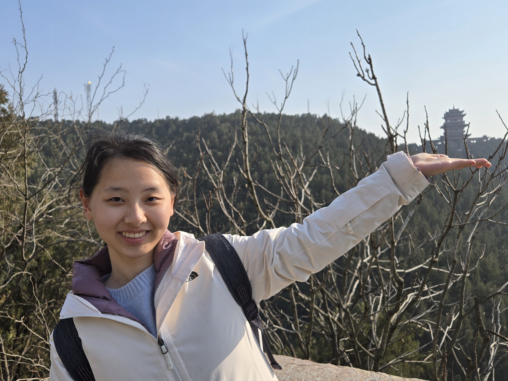

Research Assistant
Hong Kong University of Science and Technology
📫 qinshenyu29 [at] gmail.com

Hi! I'm Shenyu. I am a Research Assistant at the Hong Kong University of Science and Technology, working with Yaonan Jin. I am currently working remotely and will officially start on-site in the next month.
I am interested in theoretical computer science, particularly algorithms, probability, and problems at the intersection of computer science and economics (EconCS). With the rapid development of LLMs, proving theoretical results is becoming easier, which makes me care more about the real-world significance of the problems I study. I plan to explore research directions with greater real-world relevance, such as EconCS motivated by practical challenges and theory for AI.
I received my BEng in Computer Science from Shanghai Jiao Tong University in June this year. During my undergraduate studies, I was very fortunate to be guided by Yuhao Zhang and Chihao Zhang. In 2025, I spent five wonderful months at DIMACS, Rutgers University as a visiting research student, where I worked with Kangning Wang and Lirong Xia.
📌 I am a PhD applicant for Fall 2027! Please see my CV.